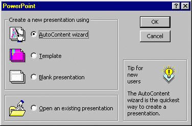
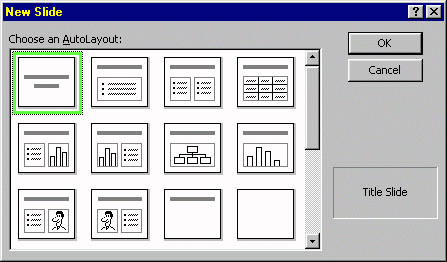

Opening an Existing Presentation
Opening an Existing Presentation

Open PowerPoint by locating the PowerPoint Icon on the desktop and double-click it.

Or, go to the Start menu, located the Programs option and find PowerPoint or look in the MS Office submenu.
After starting PowerPoint, the interface provides the following
opening screen.

To open an existing presentation, highlight the radio button
entitled "Open an Existing Presentation" near the bottom
of the screen and then press the OK button at the top right. The
system will then prompt you for the location of the previously
saved file, in the following screen:

Navigate to your disk or folder where the presentation is stored.
Once you are there, if you are unsure of the file name, click
once on the filename listed on the left hand side of the "Open"
box. This will place a preview of the file in the box on the bottom
right-hand side of the box. Double-clicking the name will open
the file.
There are several ways to create a new presentation. The initial screen provides easy access to three methods: the AutoContent Wizard, Templates, and Blank Presentation. These three options are the same options that you would receive if the "File/New" option was chosen form the File menu. The options are explained briefly below.
A "Wizard" is a short program designed to guide you
through a set of instructions using a step by step procedure.
The AutoContent wizard is, therefore, a short program written
to quickly develop the content for a presentation. Several generic
presentation topics are provided along with quick thumbnail suggestions
for what should be included in the presentation. Because the AutoContent
wizard has been written for only a small number of potential presentation
topics, it is unlikely to be useful for academic presentations.
A template is a file that contains the format (or style) of
the presentation without the content (or substance) of the presentation.
Initially, templates may be useful as they provide a set look
and feel that you may use, without taking time and effort to create
from scratch. A template is a worthwhile investment to consider
when the style of a presentation will be used over and over in
many presentations.
This option does exactly what it says - provides the user with
a simple white screen as a platform for building a presentation.
All regular editing features are still available and a blank presentation
can always be converted into a more elaborate presentation by
choosing a style and applying the style to the entire presentation.
For the beginning user, templates are recommended. If you choose the template option, the following screen appears.

You can choose any template by double-clicking it, or by clicking on it once and then clicking on the OK button. Note that there are various types of templates, each particular the the tabs arranged across the top of the window. When you single click on a presentation template a thumbnail version is presented at the right. Use this to chose a look that fits your topic or taste.
After selecting the presentation template a dialog box will
appear asking you to select the style that will be attached to
the initial slide:

Default is the Title Slide. This allows you to put a large title and a sub-title. However, any of the slide types may be selected for use depending upon your need.
Once you have selected a slide type to be used, the slide will open into Slide View and you will be ready to begin building your presentation.